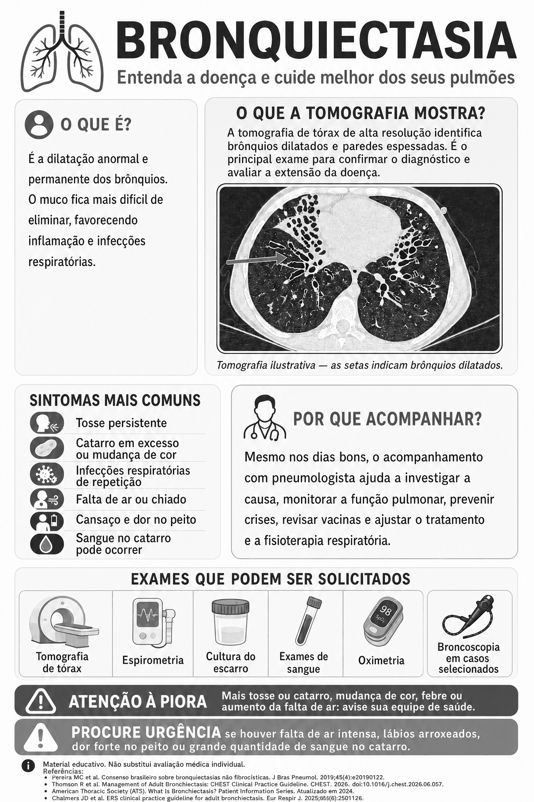

Bronquiectasia

Ler o texto do infográfico
Entenda a doença e cuide melhor dos seus pulmões.
O que é?
É a dilatação anormal e permanente dos brônquios. O muco fica mais difícil de eliminar, favorecendo inflamação e infecções respiratórias.
O que a tomografia mostra?
A tomografia de tórax de alta resolução identifica brônquios dilatados e paredes espessadas. É o principal exame para confirmar o diagnóstico e avaliar a extensão da doença. (Na imagem, tomografia ilustrativa; as setas indicam brônquios dilatados.)
Sintomas mais comuns
- Tosse persistente.
- Catarro em excesso ou mudança de cor.
- Infecções respiratórias de repetição.
- Falta de ar ou chiado.
- Cansaço e dor no peito.
- Sangue no catarro pode ocorrer.
Por que acompanhar?
Mesmo nos dias bons, o acompanhamento com pneumologista ajuda a investigar a causa, monitorar a função pulmonar, prevenir crises, revisar vacinas e ajustar o tratamento e a fisioterapia respiratória.
Exames que podem ser solicitados
- Tomografia de tórax.
- Espirometria.
- Cultura do escarro.
- Exames de sangue.
- Oximetria.
- Broncoscopia em casos selecionados.
Atenção à piora
Mais tosse ou catarro, mudança de cor, febre ou aumento da falta de ar: avise sua equipe de saúde.
Procure urgência se houver falta de ar intensa, lábios arroxeados, dor forte no peito ou grande quantidade de sangue no catarro.
Material educativo. Não substitui avaliação médica individual. Referências: Pereira MC et al., J Bras Pneumol 2019; Thomson R et al., CHEST 2026; American Thoracic Society, Patient Information Series (atualizado em 2024); Chalmers JD et al., Eur Respir J 2025.